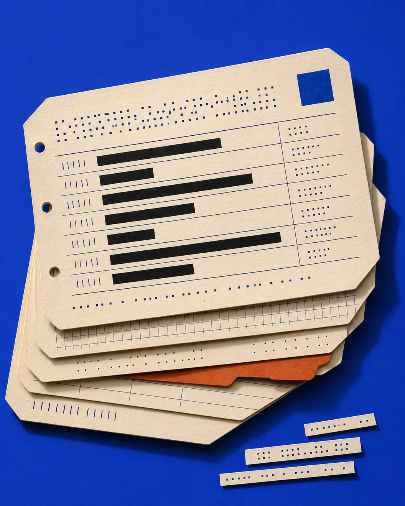
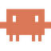
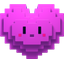

A one-way exchange
Major labs train on publicly available work. Some then restrict the use of their models’ outputs to train competitors, including through distillation, where a new model learns from another model’s answers.
A handful of labs decide who can build on the knowledge their models learned from the web. We’re building a training-data commons that people can contribute to, inspect, and use for themselves.

People spent decades writing, teaching, and making things on the open web. Publishing that work rarely gave its creators a meaningful choice about whether it would train a commercial model.
Major labs train on publicly available work. Some then restrict the use of their models’ outputs to train competitors, including through distillation, where a new model learns from another model’s answers.
If AI reaches superhuman capability, decisions about access, price, and acceptable uses could rest with a small group of people. We believe everyone has a stake in who makes those decisions.
DEM gives people a practical way to participate. Choose a conversation you have the right to share, review it on your machine, and contribute the approved examples to an open dataset others can study and build on.
Import saved conversations from these 23 coding tools. Each import starts on your machine and requires your consent.

Claude Code
CrushFor live model sessions, capture with Ollama.
Follow a walkthrough to import saved chats or capture an Ollama session.
Both installers need Python 3.11 or newer with venv and pip. Choose the method that fits your machine.
Use the curl or npm installer or install from source.
You’ll need Git and Python 3.11 or newer with venv and pip support.
git clone https://github.com/raymondchiwaz/distill-every-model.git
cd distill-every-model
python3 -m venv .venv
source .venv/bin/activate
python -m pip install -e .Activate the virtual environment in each terminal where you run DEM on macOS or Linux.
git clone https://github.com/raymondchiwaz/distill-every-model.git
cd distill-every-model
py -3 -m venv .venv
.\.venv\Scripts\python.exe -m pip install -e .On Windows, use .\.venv\Scripts\dem.exe in place of dem in the next steps.
If the review workspace is closed, run this command to open it in your browser. You can also use the local URL printed in your terminal.
dem review --openIn the review workspace, open the chat importer. Choose a source such as Codex, Claude Code, or OpenCode. Use a saved session or give DEM the path to a local transcript.
Read the consent prompt on your first import. Then pick one conversation in Chat history to inspect the redacted text.
See supported sourcesInstall DEM and have Ollama running locally. Download the sample model, complete DEM’s consent wizard, and opt in to keeping prompts for this example. Leave this terminal open.
ollama pull llama3.1
dem onboard
dem config capture capture_prompts true
dem daemonIn a second terminal, point the Ollama client at DEM’s local proxy and run a prompt.
export OLLAMA_HOST=http://127.0.0.1:11435
ollama run llama3.1 "Why is the sky blue?"$env:OLLAMA_HOST = "http://127.0.0.1:11435"
ollama run llama3.1 "Why is the sky blue?"In the second terminal, open the review workspace and inspect the prompt and answer in your sample exchange.
dem review --openStart with an exchange you have permission to share. Look for a clear problem and an answer that someone else could learn from.
owner/dataset. Check the exact records in the batch.Check the preview for details that should stay private before you approve a chat.
Report a bug, suggest a chat source, or improve the importers and review tools.